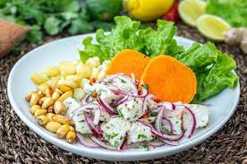

Gastronomía Peruana
Receta del Ceviche de Pescado
Ingredientes:
- 1 kilo de pescado de carne suave y firme (ojo de uva, tollo, corvina, mero)
- ½ kilo de limones peruanos, extraer el jugo
- 3 dientes de ajo molidos (no exagerar ya que su sabor es fuerte)
- 4 cebollas cortadas (largas)
- 200 gramos de rocoto molido (o ají limo)
- 2 ramitas de culantro picado finamente
- Sal y pimienta al gusto.
Preparación:
- Cortar el pescado en rectángulos de regular proporción (1 pulgada aproximadamente).
- En un recipiente de vidrio verter el jugo de limón, sal, pimienta, ajo y el rocoto, revolver.
- Verter el jugo sobre el pescado y revolver, dejar por unos minutos.
- Las cebollas y el culantro se agregan al servir.
